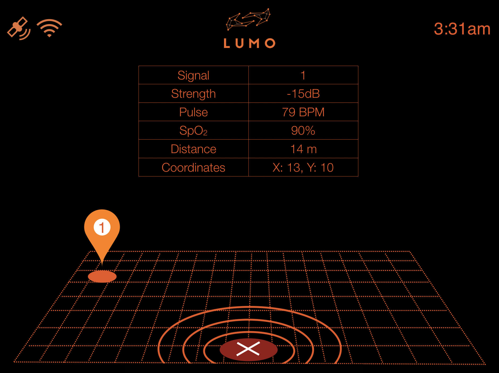
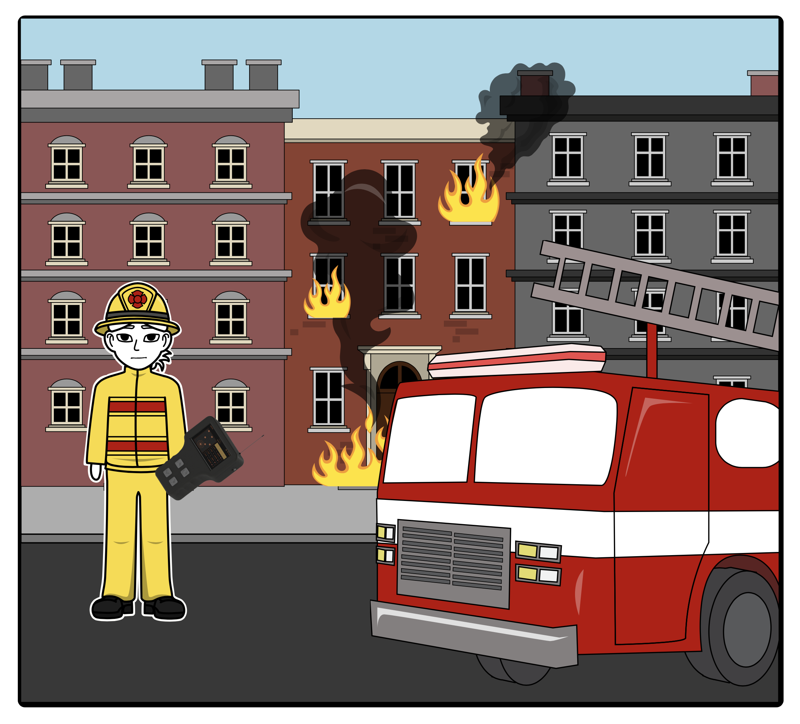
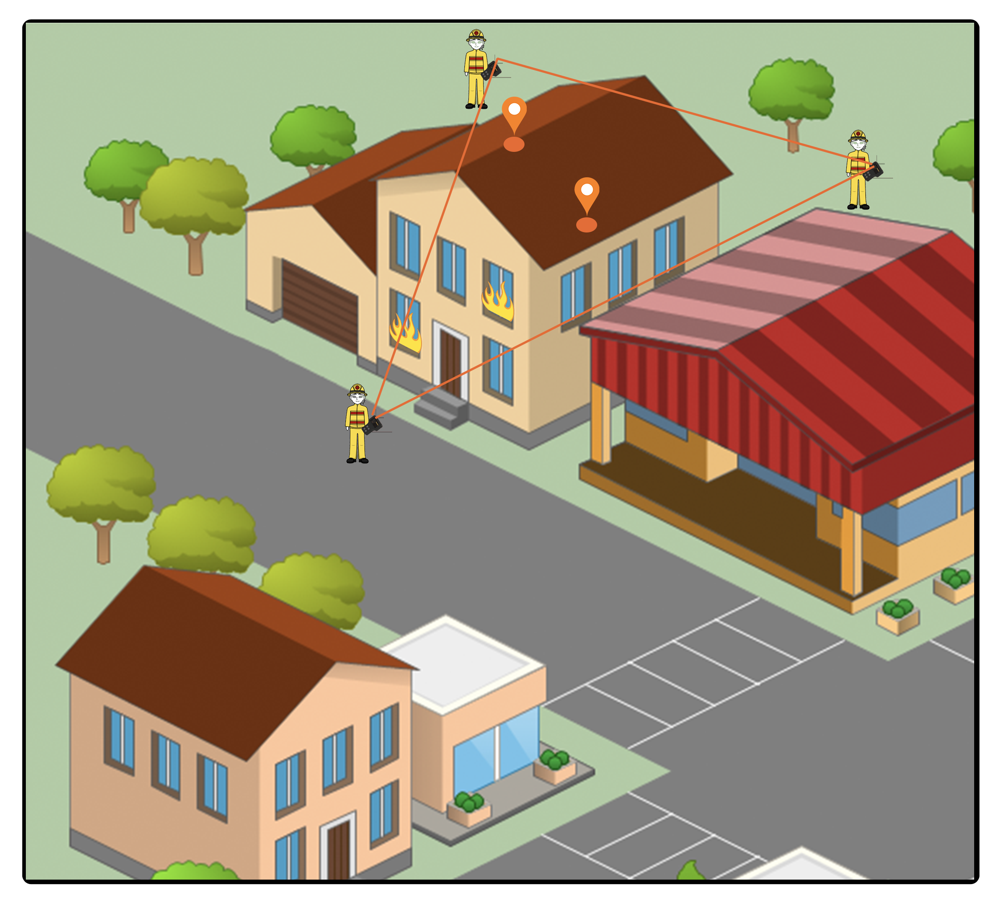
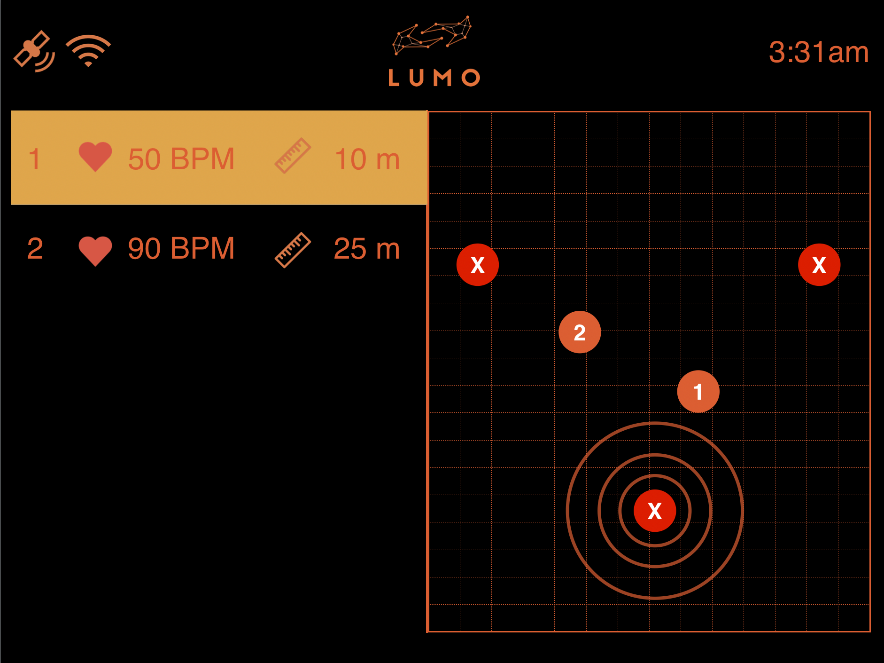
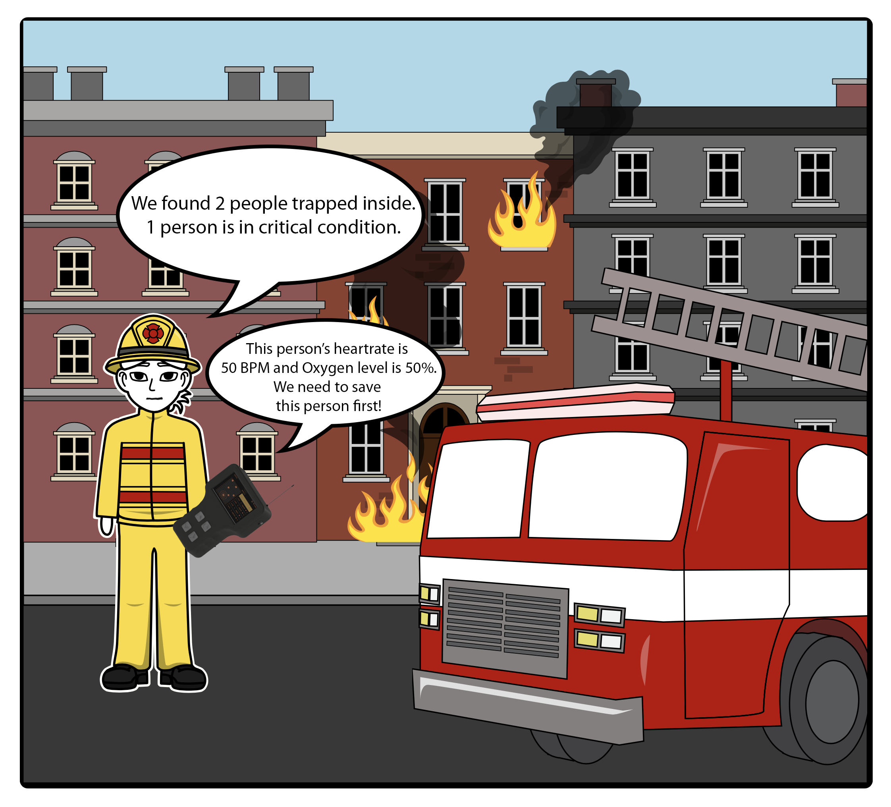
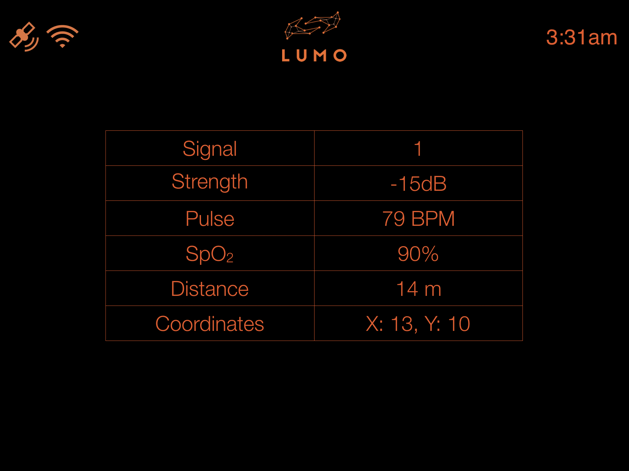
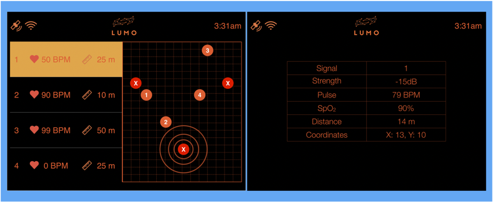

The Deluminator
What is the Deluminator?
The Deluminator is an electronic device that is part of a system designed to help rescue workers and fire fighters find and rescue people trapped during various types of disasters and emergencies. Examples where this device would be used are: Fires, Earthquakes, War Zones and Natural Disasters such as Floods etc.
This project is part of my Fourth Year Engineering Design Project and we are right now in the final phases of creating our solution. The other part of this system I referred to earlier is a wearable that will be worn on wrists of people who are trapped. This wearable is not like a traditional consumer electronic product. This is meant to be an equivalent of a first aid kit, or an emergency supply kit or a fire extinguisher. These wearables will be available at various locations on buildings and whenever there is a fire or other type of emergency, people will be able to go to these locations in the buildings and grab a wearable for themselves and put it on their wrist. The name of this wearable is Flare. Once worn and activated, the Flare will act as a beacon that will allow the rescue workers to detect this signal and triangulate the location of the person inside the building. The Flare will also be able to detect the wearer's heart rate and send that along with the signal. This way rescue workers know roughly what kind of physical condition the person is in.
I am responsible for designing the hardware for the Deluminator along with the UI and software that will go into it. In this blog I will go through my design process and show how I am trying to design the UI and UX of this device.
Some sketches of how the Deluminator will look like:

A Storyboard outlining a typical use case scenario:

Trying to determine the Navigation and Layout of the UI:

Wireframe of the UI:

The top header bar will show the a logo and the 3 images on the top left corner will show various icons to indicate network connectivity.
First draft of a design mockup for the UI based on the wireframe:

A second, more detailed mockup with improvements:

Sources of inspiration:
When trying to decide how this device should look like and work, we looked at some of the devices that firefighters and rescue workers already use and started from there. We quickly realized that the best form factor we could pursue for this device would be that of walkie talkie. Here are some of the walkie designs we liked:


We wanted to have big tactile buttons and a high-contrast monochrome display that would make using this device in harsh conditions very easy. We also drew inspiration from the original Nintendo Gameboy pictured here:

As much as we like the rugged design of the walkie-talkie, we knew that the walkie talkie was not designed to be used as handheld computing tool. It was meant to be primarily used as a talking device. However from the design of the gameboy, it must be obvious right away that it was a device that is meant to be interacted using the buttons and the display. Also the size of the Gameboy makes it very comfortable to hold in one hand, which we also wanted and liked.
Typography Analysis:
After close consideration I had narrowed down my selection of fonts for the UI to be either Courier or Helvetica. I ended up using Roboto - a free font from Google which is very similar to Helvetica, because it was difficult to get access to different weights of the Helvetica font.
Here are some comparisons and analysis I did between Roboto, Helvetica and Courier.


After looking at the differences in these fonts, I decided to go with Roboto Light for base font and Roboto Regular for highlighted text. The reason for this was I wanted the UI to look and feel modern. A font like Courier is very standard in military applications and have a strong character (no pun intended). However Roboto had the sleek look that resembles Helvetica and gives the UI a fresh feel as compared to Courier.
From my tests, I did not find any significant differences in legibility between the fonts and I found that any such difference can be compensated for by increasing the contrast of the colors used in the UI.
An exploration into making the Details View for the device more interesting

The idea behind this layout was to keep some graphical elements in the UI and not just make it only text. Also another goal was to help give the user a view with perspective so that it is easier to know which direction to move towards.
However this design had two big problems. The first problem was that the perspective view of the map was fixed. The hardware did not have any accelerometers or a compass that would let the UI know which way the user is facing. This made the perspective slightly redundant and was possible that it would mislead the user instead.
The second problem was that the hardware running all the software and the UI was not powerful enough to render all that graphics together. The perspective map required 3D manipulation of graphical elements and that made the UI very laggy and slow. This is why we did not go ahead with this UI design and instead opeted for a much simpler design that only showed the information table from the UI design above.
Storyboard on how the Deluminator will be used in the field:
Exposition: An apartment building is on fire. Several people seem to be trapped. Building is engulfed with smoke. Some of the occupants of the building are wearing the Flare watch that is transmitting a signal that includes their pulse and oxygen levels.

Rising Action: Fire fighters equiped with the deluminator arrive at the scene. Hoping some residents of the building are wearing the Flare watch that transmits their signal, the fire fighters take out their Deluminator devices and start scanning for signals.

Climax: Fire fighters pan out to form a triangle around the building on fire. Using triangulation the deluminator devices can pin point the location of the transmitted signals inside the building. This allows the fire fighters to know exactly where the people trapped are so that they can go save them.

The fire fighters find 2 signals coming from within the building. They know the pulse and oxygen levels of the person. They realize that one of the two people are in a critical state. Heart rate is falling. Oxygen levels are at 50% and quickly dropping. They must take action, fast!

Falling Action: By prioritizing their search and rescue efforts, the fire fighters were able to save both the person in critical condition, who turned out to be an infant child and also the 2nd person who turned out to be an elderly female. Both were saved in time to prevent any long term harm to their health.
User Feedback from a Waterloo Fire-Fighter:
We were lucky to be able to demo our project to a Waterloo Fire Department Fire Fighter and he was extremely happy to see what we had built. Here are some of his comments:
- Currently the only "tech" they use are proximity beacons on each fire fighter's jackets. A rudimentary receiver beeps loudly as the beacon is close and goes quiet as the beacon moves further away. This is used to track the fire fighters at a rescue site.
- For communication, the fire fighters still use radio walkie-talkies from the 80s and 90s.
- A device like the deluminator could rapidly improve the performance of fire fighters in rescue operations.
- This device can potentially save lives of those who need to be rescued, time for fire fighters and money for the Fire Department.
- The UI was good and could prove effective in a real world scenario but it should be tested by fire fighters in a training scenario.
We were happy to get his feedback and we realized that any new technology that fire fighters can get will help them alot, given their access to technology is very limited. The comment about the UI and the need to do real world testing was very important. If there was more time, one critical step would have been to do real world testing and get user feedback from the fire fighters them selves.
UI Design and Performance:
The original user interface designs involved a certain number of graphic elements namely maps. These maps were important in quickly visualizing where the localized signals were relative to the receivers. One of the screens had a design that involved a 3D perspective map to make it even easier for the user of the receiver to know which direction they need to go to find the transmitting signal. However when this design was implemented, it was quickly discovered that the raspberry pi hardware had difficulty rendering all those graphics elements while running a lot of heavy processing due to the multi-threaded program in the background. After some basic testing, the data clearly showed, the difference in performance without 3D perspective map is stark. This is why the map was removed from the design and replaced by a simpler data table. Here are the designs with and without the 3D perspective map.
Original UI Design with 3D Perspective Map:
Final UI Design without 3D Perspective Map:

Also another smaller modification that was made was regarding how the UI elements were generated on boot up. In HTML, the original design was to hide and show certain parts of the UI based on the input from users. The reason for this was to reduce the number of steps required to change the UI. But it turned out from initial tests that hiding and showing elements on the UI actually required more processing power than initially thought. The work around for this turned out to be using some basic animation. Instead of hiding certain parts of the UI in the same screen space, the actual UI layout was made wider. The width was made 2x to be specific. There were two distinct screens to show the user, so the first half of the wide screen layout was dedicated to the first screen and the second half of the wide screen layout was dedicated to the second screen. Whenever the user requested to see the second screen, the software just animate the layout by moving it from right to left and vice versa when the user wanted to return to the first screen. The following diagram clearly demonstrate the wide screen layout, where the blue background represents the total defined screen area:

Working Hardware and UI Prototype:

Just a quick glimpse at how the UI looked like on the real hardware display.
Conclusions on the Project:
This project came to an end some short while ago on the day of my team's Engineering Symposium Demo Day. It was very much a last minute scramble to get all the pieces working. software and the UI had to work well enough so that the audience could interact with the prototype and see the UI in action. I am happy to say it all worked out well. The UI and software worked exactly as intended and the audience was very pleased. We got alot of attention and praise from the demo as we had working prototypes and close-to-final software and hardware. The UI definitely gave our demo the final polish that put in the spotlight. Our team ended up winning the Best Humanitarian Design Award.
Possible Improvements on the Project:
Looking back, one of the key things I would have done differently is the hardware selection for running the software and UI. At the core of the hardware was a raspberry pi running a processor core at 1 GHz. Once the final software was up and running before the demo, I found that UI was suffering in performance and was lagging. The hardware performance bottle-necked the UI design significantly and I had to compromise the design in exchange for better performance. The final resultant UI was good and I am happy with it, however it could have been much better if the hardware performance was better.
In terms of research, it would have been better if I had gathered more feedback data from rescue operations personnel. Even though the UI works well, the design decisions could have been better backed with real user data.
Finally, I wish the project was ready for demo some time earlier. This would have given us the opportunity to take it to the Waterloo Fire Department and have then try and test it. Their feedback could have made the UI design even better.